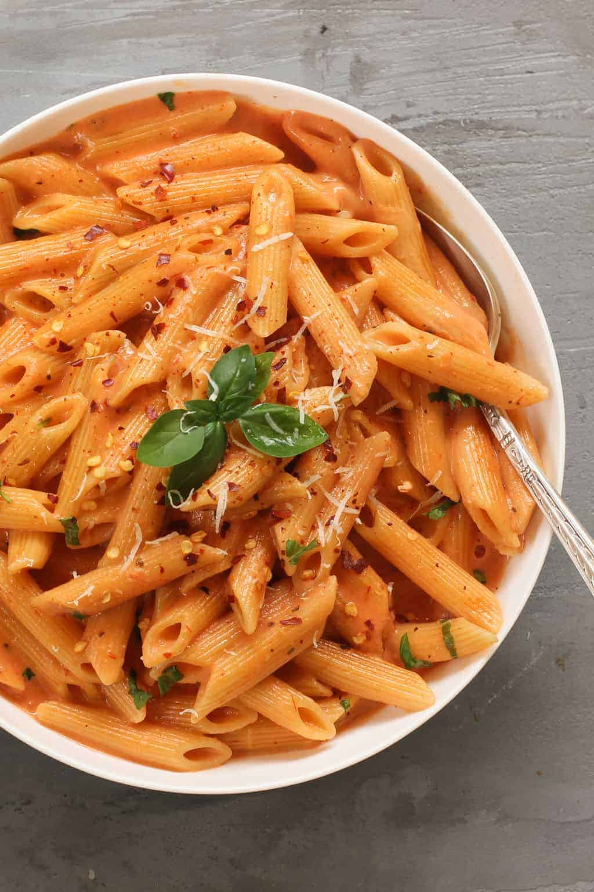

pasta is a simple dish that can be prepared in ten minutes
this recipe can be frozen or stored in the fridge if its not all used in one go

- 60g Pasta
- 1 tin tomatos
- 1tsp tomato puree
- 1 onion
- 2 cloves of garlic
- 60g cheese(or however much desired)
- optional basil
- salt
- pepper
- chili flakes
- oil
- boil a pan of salted water
- add the pasta to the pan
- finley dice the onions and mince the garlic
- cook the onion and garlic in a separate pan
- once the onion is translucent add the tomato
- add salt pepper and chili to taste
- grate and add cheese
- add some pasta water to sauce
- while pasta still has a bite drain and add to sauce
- cook for 2 more minutes then eat